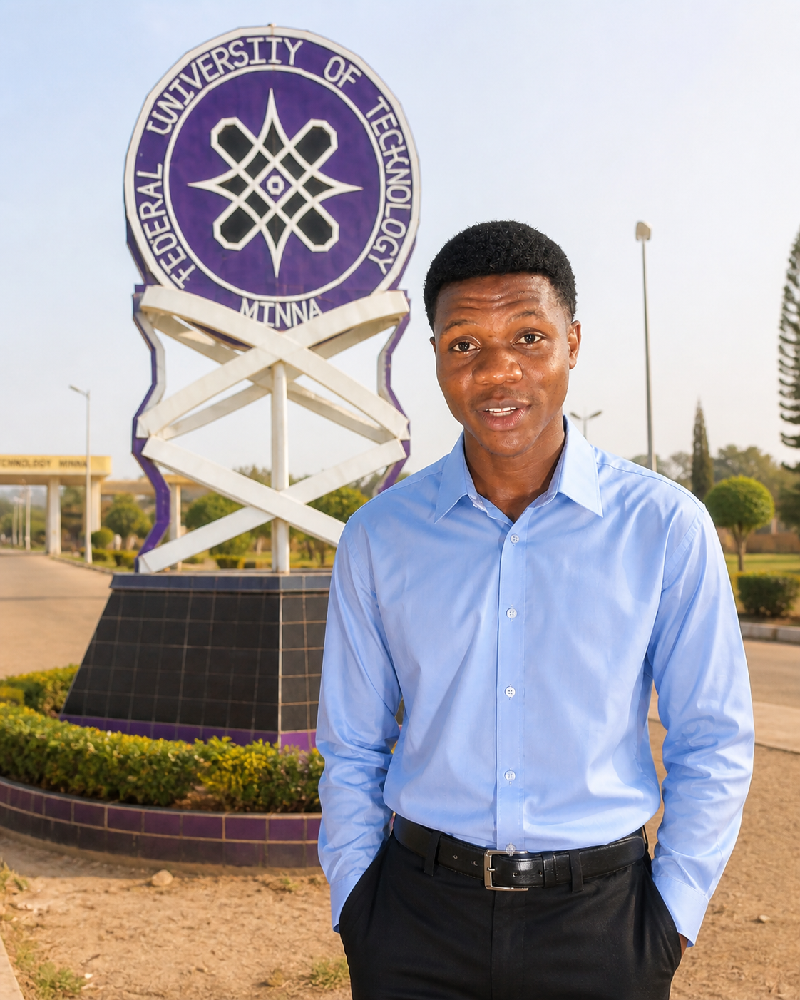

Computer Science Student
Federal University of Technology Minna
Matric No: 2025/1/107217CT
Date of Birth: 16/08/2006
Email: ibrahimolowookere01@gmail.com
Phone: 09135078639
Nationality: Nigerian
I am Olowookere Ibrahim, a Computer Science student at the Federal University of Technology Minna. I am passionate about creating designs, learning new technologies, and solving mathematical problems. My goal is to become a professional web designer and web developer, build innovative social applications, and create solutions that improve lives while achieving financial success.
To grow into a skilled and professional Web Developer / Web Designer, gain strong industry experience, and contribute to building modern social applications and innovative platforms.
Currently studying Computer Science with focus on web technologies, programming fundamentals, and practical problem-solving skills.
Completed secondary education and developed strong interest in technology, mathematics, and creativity.
I am dedicated, focused, and highly motivated. I learn quickly, adapt to new technologies easily, and I enjoy solving challenges that require logic and creativity. I also have a strong passion for design and modern user interfaces.